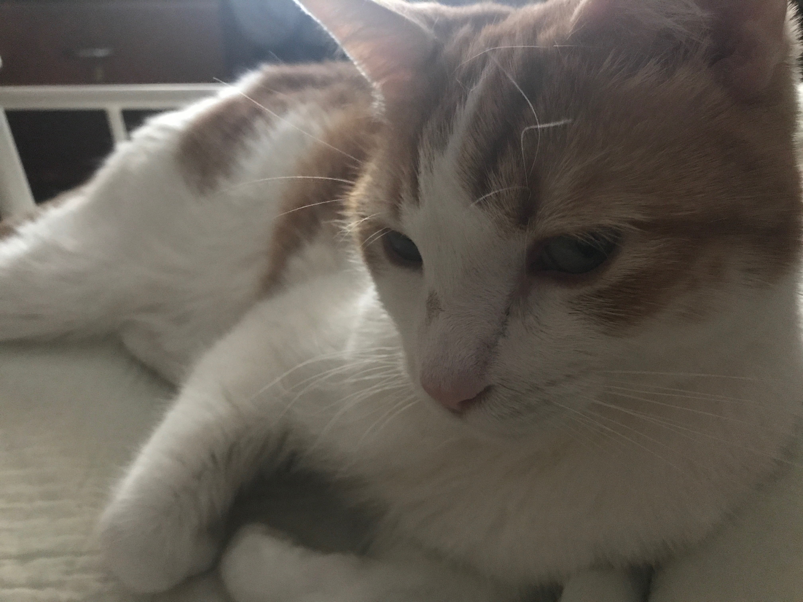
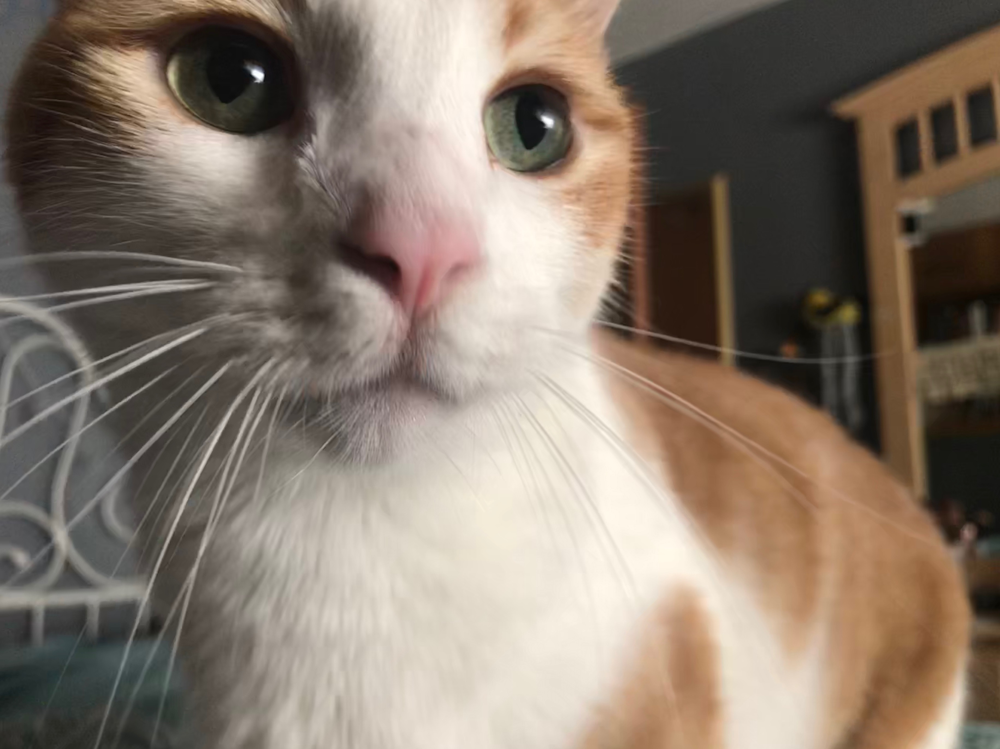

Rusty's Fan Page
Hey Guys! I wanted to spice things up and create a website for Rusty! P.S. also I guess this would be an offical fan page huh

- Rusty is 3 years old
- His birthday is April 1, 2015
- His adoption day is July 13, 2015
- He has a brother named copper
- He was almost named Dorito, but I decided to stick with the name the shelter gave him
- He has a long lost brother that lives by my cabin whose name is Dorito Valentino
- He LOVES tuna
- He LOVES milk though most cats are lactose intolerent so I don't allow him to drink it
- He does not like water
- Rusty is the best
